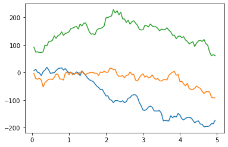

Liquid Argon model¶
[1]:
import numpy as np
import matplotlib.pyplot as plt
import sympy as sy
import simtk.unit as unit
from simtk import openmm as mm
from simtk.openmm import app
import skopt as skopt
from tqdm import tqdm
[2]:
n_particles = 1000
reduced_density = 0.75
mass = 39.948 * unit.amu
sigma = 3.404 * unit.angstroms
epsilon = 0.238 * unit.kilocalories_per_mole
charge = 0.0 * unit.elementary_charge
temperature = 300.0 * unit.kelvin
integration_timestep = 2.0 * unit.femtoseconds
collisions_rate = 1.0 / unit.picoseconds
equilibration_time = 1.0 * unit.nanoseconds
production_time = 5.0 * unit.nanoseconds
saving_time = 50.0 * unit.picoseconds
The Van der Waals radius of Argon is 1.88 angstroms.
[3]:
radius = 2.0**(-5/6) * sigma
print(radius)
1.9104304062225528 A
[4]:
volume_particles = n_particles * sigma**3
volume = volume_particles/reduced_density
l_box = volume**(1/3)
[5]:
system = mm.System()
[6]:
v1 = np.zeros(3) * unit.angstroms
v2 = np.zeros(3) * unit.angstroms
v3 = np.zeros(3) * unit.angstroms
v1[0] = l_box
v2[1] = l_box
v3[2] = l_box
system.setDefaultPeriodicBoxVectors(v1, v2, v3)
[7]:
non_bonded_force = mm.NonbondedForce()
non_bonded_force.setNonbondedMethod(mm.NonbondedForce.CutoffPeriodic)
non_bonded_force.setCutoffDistance(3.0*sigma)
non_bonded_force.setUseSwitchingFunction(True)
non_bonded_force.setSwitchingDistance(2.0*sigma)
non_bonded_force.setUseDispersionCorrection(True)
[8]:
for _ in range(n_particles):
system.addParticle(mass)
non_bonded_force.addParticle(charge, sigma, epsilon)
[9]:
_ = system.addForce(non_bonded_force)
[10]:
integrator = mm.LangevinIntegrator(temperature, collisions_rate, integration_timestep)
platform = mm.Platform.getPlatformByName('CUDA')
context = mm.Context(system, integrator, platform)
[11]:
space = skopt.Space([[0.0, l_box._value], [0.0, l_box._value], [0.0, l_box._value]])
grid_generator = skopt.sampler.Grid(use_full_layout=False)
initial_positions = grid_generator.generate(space.dimensions, n_particles)
initial_positions = np.array(initial_positions)*unit.angstroms
[12]:
context.setPositions(initial_positions)
context.setVelocitiesToTemperature(temperature)
[15]:
state=context.getState(getEnergy=True)
print("Before minimization: {}".format(state.getPotentialEnergy()))
mm.LocalEnergyMinimizer_minimize(context)
state=context.getState(getEnergy=True)
print("After minimization: {}".format(state.getPotentialEnergy()))
Before minimization: 196946114.0758952 kJ/mol
After minimization: -5962.329866517137 kJ/mol
[16]:
equilibration_n_steps = int(equilibration_time/integration_timestep)
integrator.step(equilibration_n_steps)
context.setTime(0.0*unit.picoseconds)
[17]:
production_n_steps = int(production_time/integration_timestep)
saving_n_steps = int(saving_time/integration_timestep)
n_saving_periods = int(production_n_steps/saving_n_steps)
time = np.zeros([n_saving_periods]) * unit.nanoseconds
trajectory = np.zeros([n_saving_periods, n_particles, 3]) * unit.angstroms
potential_energy = np.zeros([n_saving_periods]) * unit.kilocalories_per_mole
for ii in tqdm(range(n_saving_periods)):
integrator.step(saving_n_steps)
state = context.getState(getPositions=True, getEnergy=True)
time[ii] = state.getTime()
trajectory[ii,:,:] = state.getPositions(asNumpy=True)
potential_energy = state.getPotentialEnergy()
100%|██████████| 99/99 [03:18<00:00, 2.01s/it]
[20]:
trajectory_mem = trajectory.size * trajectory.itemsize * unit.bytes
print('Trajectory size: {} MB'.format(trajectory_mem._value/(1024*1024)))
Trajectory size: 2.26593017578125 MB
[23]:
l_box
[23]:
Quantity(value=37.46586785079102, unit=angstrom)
[22]:
plt.plot(time, trajectory[:,0,0])
plt.plot(time, trajectory[:,0,1])
plt.plot(time, trajectory[:,0,2])
[22]:
[<matplotlib.lines.Line2D at 0x7fe346b59b90>]

[ ]: